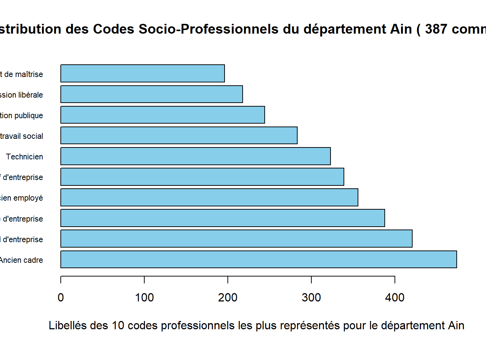

compter_nombre_d_adjoints(df_departement)[1] 1044Ce document a pour objectif de réaliser une analyse statistique des caractéristiques des élus lors des élections françaises de 2024. Concrètement, nous allons nous focaliser sur le département “Ain” (1) et la commune “L’Abergement-Clémenciat” (1001) .
Dans cette séction nous procédons à documenter les caractéristiques principales des élus lors des élections françaises des 2024, telles que l’âge ou leur professions pour le département 1 .
Premièrement, nous vérifions le nombre d’adjoints pour le département.
Nombre d’adjoints:
compter_nombre_d_adjoints(df_departement)[1] 1044Tout d’abord nous alons créer la distribution de l’âge des élus pour le département 1 . Nous pouvons idéntifier par ailleurs l’élu.e le/la plus âgé.e et le/la plus jeune. En plus, une distirbution de l’âge est proposé pour les communes avec l’âge moyenne la plus faible et celle avec l’âge moyenne la plus élevée.
Summary_departement(df_departement)Nom du département: Ain
Nombre de communes: 387
Nombre d'élu.e.s: 5982
Distribution des âges des élu.e.s:
Min. 1st Qu. Median Mean 3rd Qu. Max.
22.00 47.00 57.00 56.55 66.00 89.00
L'élu.e le/la plus âgé(e): LUTRIN Pierre - Age: 89 - Commune: Izieu
L'élu.e le/la plus jeune: JAN Nicolas Marco - Age: 22 - Commune: Challex
Commune avec la moyenne d'âge la plus faible: Saint-Jean-Sur-Reyssouze
Distribution des âges des élu.e.s de cette commune:
Min. 1st Qu. Median Mean 3rd Qu. Max.
28.0 37.5 46.0 46.8 57.0 73.0
Commune avec la moyenne d'âge la plus élevée: Ruffieu
Distribution des âges des élu.e.s de cette commune:
Min. 1st Qu. Median Mean 3rd Qu. Max.
50.00 64.00 74.00 68.90 75.75 77.00 Nous passons maintenant à une visualisation des différentes professions des élus lors des élections de 2024 pour le département 1 .
plot_departement(df_departement)
Dans cette séction nous procédons à documenter les caractéristiques principales des élus lors des élections françaises des 2024, telles que l’âge ou leur professions pour la commune 1001 .
Premièrement, nous vérifions le nombre d’adjoints pour la commune numéro 1001.
Nombre d’adjoints:
compter_nombre_d_adjoints(df_commune)[1] 3Tout d’abord nous alons créer la distribution de l’âge des élus pour la commune 1001 . Nous pouvons idéntifier par ailleurs l’élu.e le/la plus âgé.e.
summary_commune(df_commune)Commune: L'Abergement-Clémenciat
Nombre d'élu.e.s: 14
Distribution des âges:
Min. 1st Qu. Median Mean 3rd Qu. Max.
36.00 47.75 57.00 57.86 72.00 74.00
L'élu.e le plus âgé(e):
Nom.de.l.élu Prénom.de.l.élu Age
11 MARGUIN Jean Paul 74Nous passons maintenant à une visualisation des différentes professions des élus lors des élections de 2024 pour la commune 1001 .
Data.gouv.fr. (s.f.). Répertoire national des élus. Plateforme ouverte des données publiques françaises. https://www.data.gouv.fr/fr/datasets/repertoire-national-des-elus-1/#/resources/d5f400de-ae3f-4966-8cb6-a85c70c6c24a
-firstlibAlex (https://github.com/aletorell/firstlibAlex)
Fonctions utilisées du package: creer_commune, creer_departement, summary_commune, Summary_departement, plot_commune, plot_departement et compter_nombre_d_adjoints.
-quarto
-remotes
-knitr
-writexl
-ggplot2
library(knitr)
kable(head(df_departement))| Code.du.département | Libellé.du.département | Code.de.la.commune | Libellé.de.la.commune | Nom.de.l.élu | Prénom.de.l.élu | Code.sexe | Date.de.naissance | Code.de.la.catégorie.socio.professionnelle | Libellé.de.la.catégorie.socio.professionnelle | Date.de.début.du.mandat | Libellé.de.la.fonction | Date.de.début.de.la.fonction | Code.nationalité |
|---|---|---|---|---|---|---|---|---|---|---|---|---|---|
| 1 | Ain | 1001 | L’Abergement-Clémenciat | BEAUDET | Sylvie | F | 25/03/1967 | 12 | Agriculteur sur moyenne exploitation | 18/05/2020 | FR | ||
| 1 | Ain | 1001 | L’Abergement-Clémenciat | BERAUD | Zélie | F | 26/03/1980 | 43 | Profession intermédiaire de la santé et du travail social | 18/05/2020 | FR | ||
| 1 | Ain | 1001 | L’Abergement-Clémenciat | BOUILLOUX | Delphine | F | 02/08/1977 | 38 | Ingénieur et cadre technique d’entreprise | 18/05/2020 | FR | ||
| 1 | Ain | 1001 | L’Abergement-Clémenciat | BOULON | Daniel | M | 04/03/1951 | 74 | Ancien cadre | 18/05/2020 | Maire | 26/05/2020 | FR |
| 1 | Ain | 1001 | L’Abergement-Clémenciat | BUET | Roger | M | 21/04/1952 | 71 | Ancien agriculteur exploitant | 18/05/2020 | 3ème adjoint au Maire | 26/05/2020 | FR |
| 1 | Ain | 1001 | L’Abergement-Clémenciat | BUGNOT | Séverine | F | 02/04/1974 | 43 | Profession intermédiaire de la santé et du travail social | 18/05/2020 | FR |
Vous pouvez récuperer les données du département ici
# Utiliser les paramètres définis au début
code_departement <- params$code_departement
# Filter les données d'après les paramètres
filtered_departement <- elus_cm[elus_cm$`Code.du.département` == code_departement, ]
# Extraire la libellé du département
nom_departement <- unique(filtered_departement$`Libellé.du.département`)
# Créer un dataframe avec la fonction creer_commune pour le département sélectionée
df_departement <- creer_departement(elus_cm, nom_departement)library(knitr)
kable(head(df_commune))| Code.du.département | Libellé.du.département | Code.de.la.commune | Libellé.de.la.commune | Nom.de.l.élu | Prénom.de.l.élu | Code.sexe | Date.de.naissance | Code.de.la.catégorie.socio.professionnelle | Libellé.de.la.catégorie.socio.professionnelle | Date.de.début.du.mandat | Libellé.de.la.fonction | Date.de.début.de.la.fonction | Code.nationalité |
|---|---|---|---|---|---|---|---|---|---|---|---|---|---|
| 1 | Ain | 1001 | L’Abergement-Clémenciat | BEAUDET | Sylvie | F | 25/03/1967 | 12 | Agriculteur sur moyenne exploitation | 18/05/2020 | FR | ||
| 1 | Ain | 1001 | L’Abergement-Clémenciat | BERAUD | Zélie | F | 26/03/1980 | 43 | Profession intermédiaire de la santé et du travail social | 18/05/2020 | FR | ||
| 1 | Ain | 1001 | L’Abergement-Clémenciat | BOUILLOUX | Delphine | F | 02/08/1977 | 38 | Ingénieur et cadre technique d’entreprise | 18/05/2020 | FR | ||
| 1 | Ain | 1001 | L’Abergement-Clémenciat | BOULON | Daniel | M | 04/03/1951 | 74 | Ancien cadre | 18/05/2020 | Maire | 26/05/2020 | FR |
| 1 | Ain | 1001 | L’Abergement-Clémenciat | BUET | Roger | M | 21/04/1952 | 71 | Ancien agriculteur exploitant | 18/05/2020 | 3ème adjoint au Maire | 26/05/2020 | FR |
| 1 | Ain | 1001 | L’Abergement-Clémenciat | BUGNOT | Séverine | F | 02/04/1974 | 43 | Profession intermédiaire de la santé et du travail social | 18/05/2020 | FR |
Vous pouvez récuperer les données ici
# Utiliser les paramètres définis au début
code_commune <- params$code_commune
# Filter les données d'après les paramètres
filtered_commune <- elus_cm[elus_cm$`Code.de.la.commune` == code_commune, ]
# Extraire la libellé de la commune
nom_commune <- unique(filtered_commune$`Libellé.de.la.commune`)
# Créer un dataframe avec la fonction creer_commune pour la commune sélectionée
df_commune <- creer_commune(elus_cm, nom_commune)